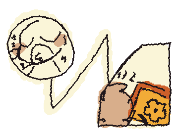
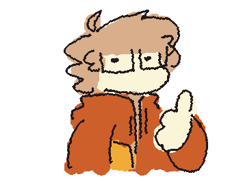
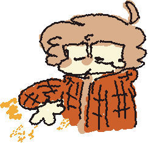

Bueno sobre la historia de usuario sobre un dibujante/animador tiene igual importancia como la de una pagina de reportes. Yo en estos años eh hecho comisiones locales (osea que no hago trabajos afuera de mi circulo) ya que no tengo ninguna cuenta para que me paguen mi trabajo cuando esta hecho,
pero eh tenido mini comisiones que eh hecho afuera de mi zona, como dije yo fui betatester en un juego pero tambien trabaje como animador en algunos escenarios del juego y ese fue mi unico trabajo afuera de lo que es que me paguen por un dibujo un amigo/amiga.
COMO Dibujante, QUIERO un sistema automatizado para recibir comisiones, aceptar comision y enviar avances a mis clientes(bocetos,lineart,etc) y recibir mi pago final por el trabajo.
PARA no malgastar mi tiempo de trabajo, evitar malentedidos con clientes y asegurarme que no me estafen con los pagos.
Mi Idea para que esta situacion no ocurra continuamente (que es mas facilitar) y son:
Criterio de Aceptacion de Comisiones
1.- Formulario de Solicitud: Con esto el cliente debe completar el formlurario que incluira; tipo de ilustracion/animacion/gif (con refencias:masocta,retrato,personaje ficitio), el estilo, y su nombre de usuario/red social.
2.- Aprobracion de Presupuesto: El Sistema debe generar un resumen automaico del costo de la comision (describiendo todo lo que el solicita) para que el cliente lo aprube antes de iniciar el trabajo.
3.- Gestion de Anticipos: El Usuario debe poder configurar el porcentaje de lo que enviara (un deposito obligatorio como 50%, es lo mas comun en el mundo de los artistas eso) para bloquear el cupo en su agenda.
4.- Validacion de Pago: La Plataforma debe notificar al artista de manera instantanea cuando el pago (anticipo o pago final) haya sido procesado exitosamente en su cuenta.

